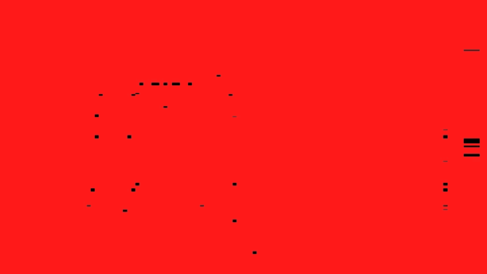

Type design—and typography more broadly—has become fluid, iterative, and increasingly programmable in the era of digital tools. As interfaces and software reshape the way letterforms are made, the boundaries between production and design begin to blur. What once felt like a linear process with a clear endpoint now resembles an open system: there is no true “final” result, only the moment when the designer chooses to stop. In this shifting landscape, the project frames typography as something continuously developed, exposed, and revealed through the tools that produce it.

Made with Endlesstools